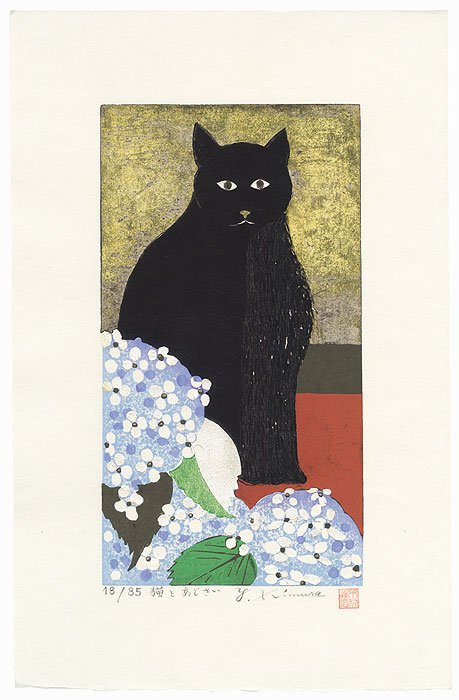

Yoshiharu Kimura

Japanese Woodblock Print,
Cat and Hydrangea, 1990
Understanding the artwork of Yoshiharu Kimura is closely intertwined with comprehending the Japanese pursuit of perfection, often in what might seem to Westerners as minor aspects of life.
Kimura's dedication lies in the pursuit of perfection in portraying the authentic essence of birds.
Short Biography of Yoshiharu Kimura
Yoshiharu Kimura was born in Tokyo in 1934. He received accolades, winning a prestigious prize at the Nihon Banga-in Exhibition in 1957 and another at the Kokugakei Exhibition in 1965. In 1978, Kimura became a member of Kokugakei. Notably, between 1974 and 1979, he held annual one-man shows at Odakyu Department Store in Japan. His artistic journey expanded globally with a solo exhibition in Philadelphia, U.S.A., in 1988, alongside another showcase at the Yoseido Gallery in Tokyo, Japan.
Art Prints by Yoshiharu Kimura
Yoshiharu Kimura predominantly works in the medium of the woodblock print. All prints observed thus far have been limited editions, bearing the artist's signature and numbering.
Among the prints sold by artelino since 2001, twenty-five have featured birds as either the primary or secondary subject, often depicted within woodlands. Only one deviated from this theme, showcasing a Japanese stone garden. It's intriguing to witness the continuity of subject matter across several decades while observing the evolution of the artist's style. This evolution serves as a reflection of the ever-changing "Zeitgeist" in fashion and design trends, a phenomenon that fine arts have mirrored from the post-war era to the present day.
For those who experienced the 1960s, reflecting on these prints offers an intriguing glimpse into a period that feels both intimately close and yet distantly removed.